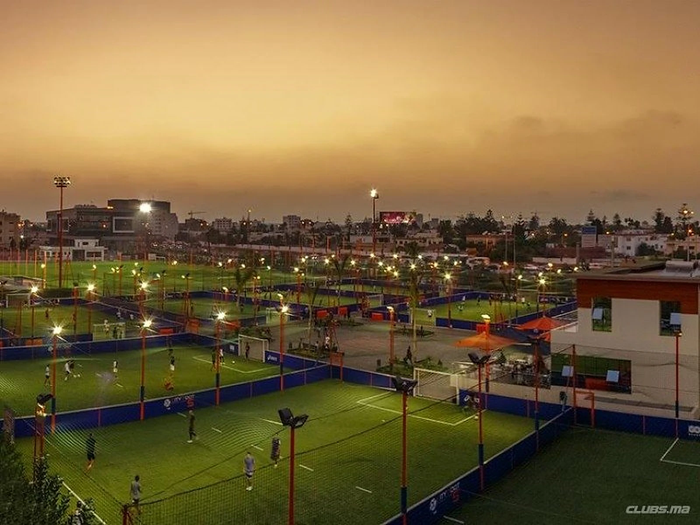

Terrain partenaire · Casablanca
City Foot 5
Le plus grand complexe de foot 5v5 à Casablanca. 13 terrains, 6 filmés. Ouvert tous les jours de 9h à minuit.
- AdresseRte de l'Oasis, Casablanca
- Horaires9h – minuit · 7j/7
- CaptationSeuls quelques terrains sont filmés